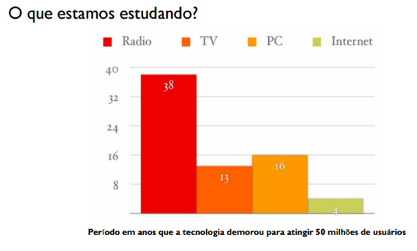
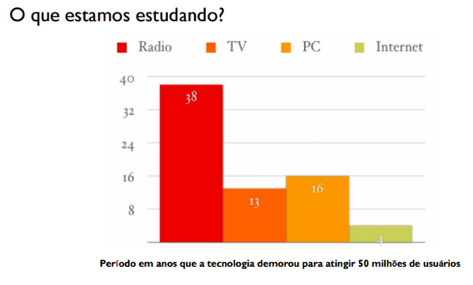

DESENVOLVIMENTO PARA INTERNET – HTML E CSS
Introdução ao HTML e CSS
- HTML (Hyper Text Markup Language) é uma Linguagem de Marcação de Hipertexto utilizada para criação de páginas da Web. Essa é a linguagem que o seu navegador (Browser) decodifica para exibir as páginas. (FERREIRA & EIS, ONLINE, p.7)
- Hipertexto pode ser definido como todo o conteúdo o qual se encontra inserido em um documento para a web, sendo que sua principal característica seria a possibilidade de se interligar a outros documentos também na web. (SILVA, 2011, p.20)
- O HTML é baseado no conceito de Hipertexto. Hipertexto são conjuntos de elementos – ou nós – ligados por conexões. Estes elementos podem ser palavras, imagens, vídeos, áudio, documentos etc.
- Com a linguagem HTML é possível desenvolver toda a estruturação do conteúdo da mesma (título, subtítulo, posicionamento de imagens, tabelas, etc). (W3CSCHOOL, ONLINE)
- As páginas criadas em html são visualizadas pelos navegadores
Breve Histórico da evolução do HTML
 
